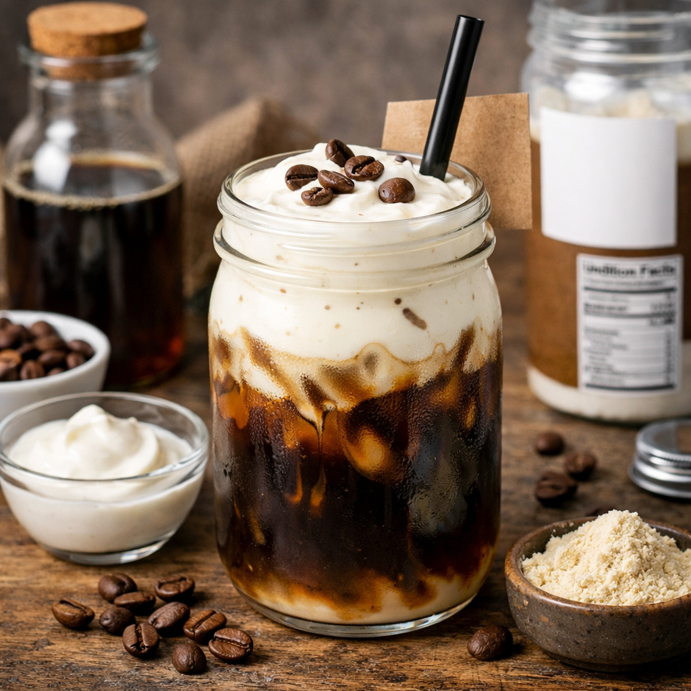
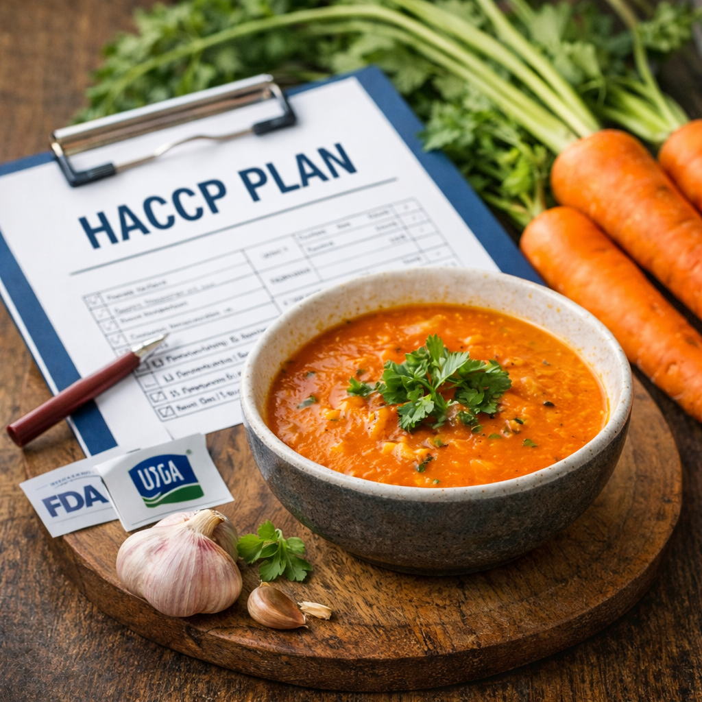
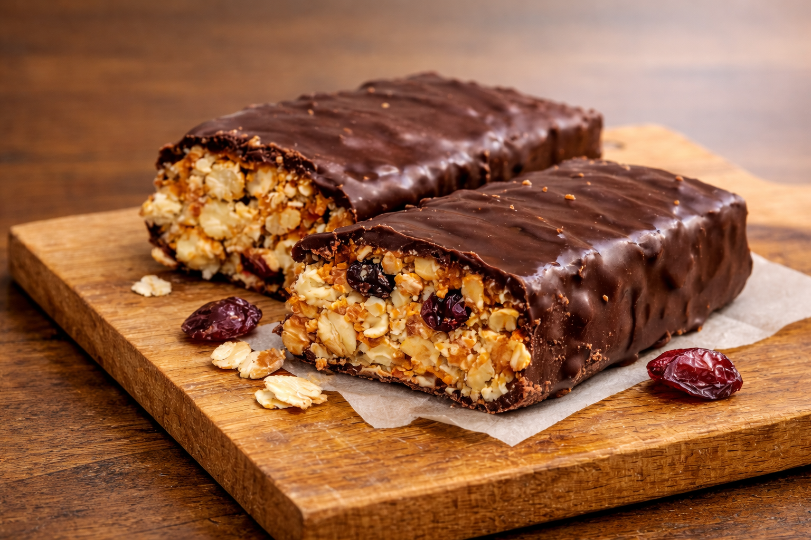
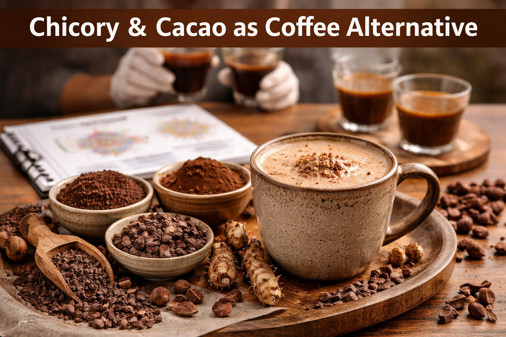
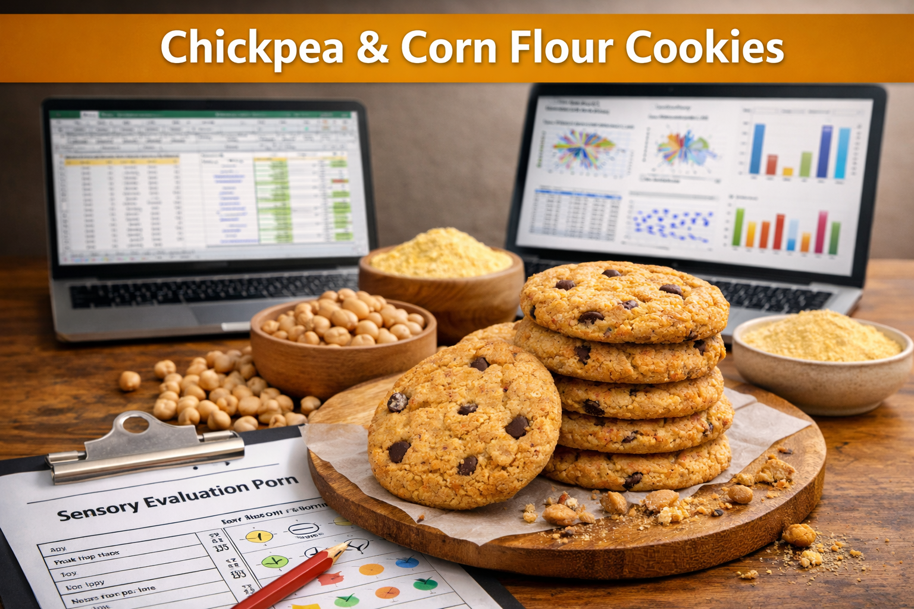
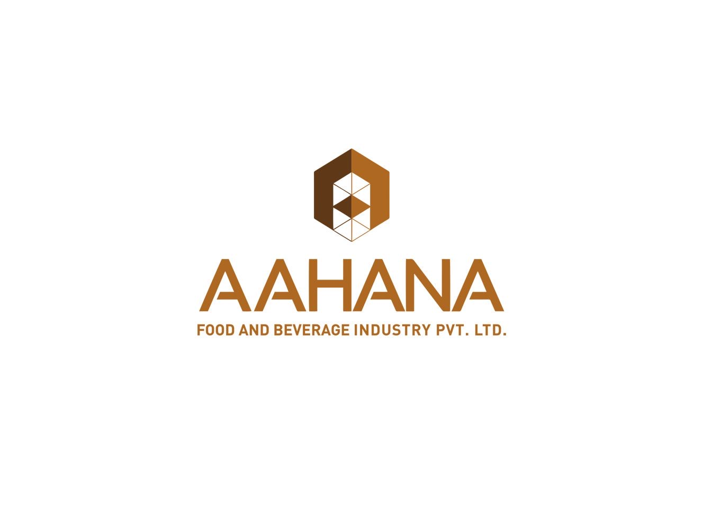
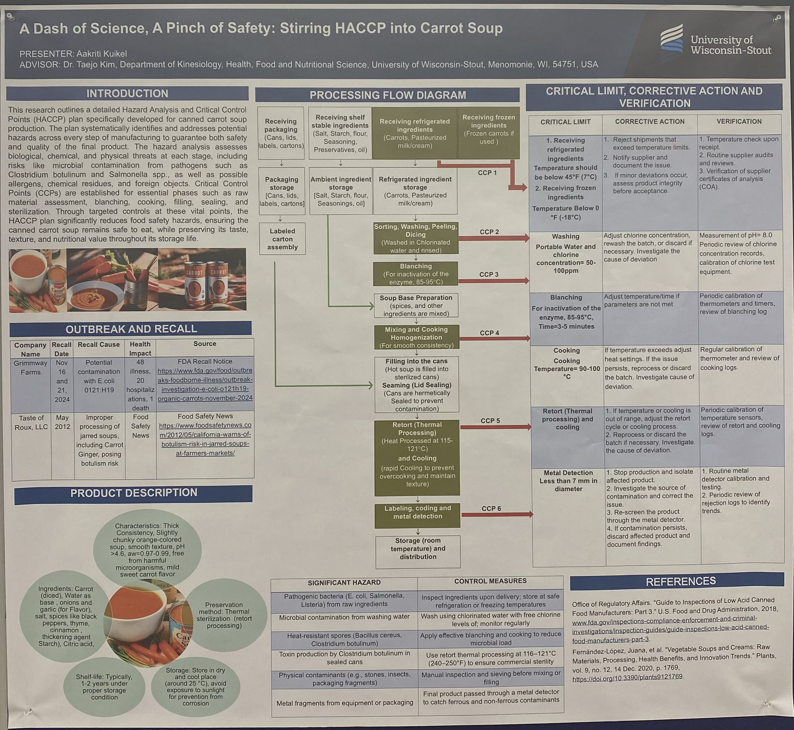

Name: Aakriti Kuikel
Education: Masters in Food Science
(Expected Graduation: May 2026)
Bachelors in Food Science (Graduated: May 2023)
Email: aakritikuikel12@gmail.com
View ResumeCertifications
Professional trainings and certifications
Internal Auditor ISO 22000:2018 / HACCP
Received Internal Auditor Training on Food Safety Management System ISO 22000:2018/HACCP from Globus Certification Nepal Pvt. Ltd.
Root Cause Analysis

Completed Root Cause Analysis training.
About me
I am a graduate student in Food Science and Technology with technical expertise in food safety systems, quality assurance, and product formulation. My work involves HACCP plan development, hazard analysis, CCP determination, and validation of preventive controls in compliance with regulatory standards. I have hands-on experience in food microbiology and analytical testing, including SPC, yeast and mold counts, LAB, coliforms, pathogen detection, PCR-based analysis, and HPLC quantification of bioactive compounds. My background includes evaluation of intrinsic and extrinsic factors affecting microbial growth, shelf-life and spoilage studies, and application of GMP, sanitation, and documentation practices. Through industry internships and applied research, I have developed a strong foundation in process control, data-driven decision making, and cross-functional collaboration within food production and laboratory environments.
Academic Projects

Cold Brew Coffee–Greek Yogurt Drink
Conceptualized a functional dairy beverage and designed formulation for protein content, flavor balance, and consumer acceptance; reviewed processing steps and food safety (HACCP, pH, allergens), packaging, labeling, and shelf life.

HACCP Plan for Carrot Soup
Developed a detailed HACCP plan including hazard analysis, critical control points, preventive strategies, monitoring, corrective actions, verification, and record-keeping to meet regulatory standards.

Protein Bar for Elderly People
Formulated a protein bar targeted to elderly nutrition and conducted sensory evaluation to assess acceptability and key sensory attributes.

Chicory & Cacao as Coffee Alternative
Conducted comparative sensory analysis (aroma, flavor, mouthfeel, color, aftertaste) using trained panel methods and standardized sensory protocols.

Chickpea & Corn Flour Cookies
Developed a novel cookie formulation and performed physicochemical + sensory evaluation; analyzed results using structured testing methods with SPSS and MS Excel.
Research Experience
- Performed microbial analysis including SPC, yeast & mold, LAB, coliforms, E. coli, Salmonella, Listeria, and Vibrio across meat, seafood, produce, dairy, and water samples.
- Conducted pathogen isolation and biochemical assays using FDA BAM and USDA FSIS methodologies including MPN and Petrifilm analysis.
- Applied molecular techniques including conventional PCR and real-time PCR for rapid pathogen detection.
- Evaluated intrinsic and extrinsic microbial growth factors such as pH, water activity, moisture content, oxygen availability, and fermentation conditions.
- Performed shelf-life studies, spoilage assessment, and water quality testing while maintaining GMP, sanitation, and biosafety compliance.
- Supported laboratory instruction by maintaining lab readiness, reviewing lab reports, grading assignments, and training students on aseptic microbiological techniques.
- Conducted HPLC analysis to quantify ascorbic acid and other bioactive compounds in food matrices.
- Evaluated antimicrobial activity of grape seed extract against foodborne microorganisms to explore natural preservative applications.
- Monitored shelf-life stability of pickle varieties during room temperature storage using pH, TPC, yeast & mold, and LAB measurements.
- Applied food microbiology and quality control techniques supporting food safety, preservation, and product development.
Work Experiences
Student Manager — University of Wisconsin Dining Services
Sep 2024 – Current • Menomonie, WI
• Monitored food safety and quality controls during preparation, holding, and service (temperature + cross-contamination control)
• Enforced sanitation, hygiene, and SOP compliance aligned with health regulations
• Trained and supervised staff on GMPs, food safety practices, and corrective actions
• Supported audit readiness through routine checks, documentation, and inspection follow-ups

Aahana Food and Dairy Beverage Industry Pvt. Ltd.
Jan 2024 – Aug 2024 • Nepal
• Conducted milk sampling and quality analysis; supported compliance with HACCP food safety standards
• Assisted in pasteurization and homogenization to enhance consistency and shelf life
• Performed 20+ microbiological and physicochemical tests for dairy quality assurance
• Supported 3+ NPD trials by formulating and testing dairy-based beverages
• Collaborated with QC team; improved process efficiency through GMP practices
Industrial Exposure — Bottlers Nepal Limited (Coca-Cola)
May 12 – Jul 7, 2023 • Balaju, Kathmandu
• Gained experience in water treatment (WTP) and effluent treatment (ETP) for beverage safety and environmental compliance
• Completed 20+ microbiological analyses to prevent contamination and support HACCP/ISO adherence
• Observed supply chain and production operations: raw materials, QC checks, and line efficiency
Presentations

- Developed a Hazard Analysis and Critical Control Point (HACCP) plan for canned carrot soup production to ensure product safety and quality.
- Analyzed biological, chemical, and physical hazards including microbial contamination from pathogens such as Salmonella, E. coli, and Clostridium botulinum.
- Designed a full processing flow diagram covering ingredient receiving, washing, blanching, cooking, filling, sealing, retort processing, and storage.
- Identified critical control points including ingredient temperature control, washing sanitation, blanching conditions, cooking temperature, retort sterilization, and metal detection.
- Established corrective actions and verification procedures to maintain food safety compliance and reduce contamination risks.
Awards & Recognition
Dr. Karen Johnson Endowed Scholarship
2025 – 2026
• Recognized for academic achievement, leadership qualities, and commitment to the field of food science.
International Student Tuition Scholarship Award
Aug 2024 – Present
• Awarded by University of Wisconsin–Stout for academic performance, leadership, and contributions to international students.
Skills & Certifications
Technical Skills
• Food Safety Regulations, GMP, HACCP, SSOP, Documentation & record keeping
• Microbial analysis, TPA, PCR, HPLC, Nutritional analysis
• 5S, Lean Manufacturing, Root Cause Analysis (RCA), Six Sigma
Soft Skills
• Problem solving, analytical thinking, attention to detail
• Cross-functional collaboration, adaptability, open to learn
Certifications
• Root Cause Analysis
• GMPs in Food Industry
• HACCP
• ISO 22000:2018 Food Safety Management System
Contact
Email: aakritikuikel12@gmail.com
Location: Mankato, MN, 56001